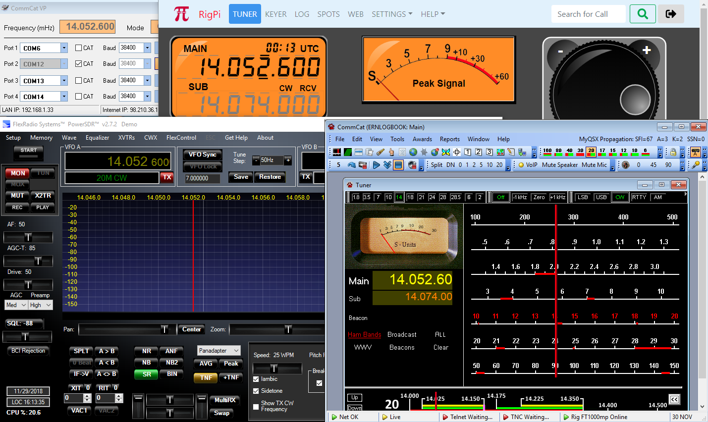

|
<< Click to Display Table of Contents >> Navigation: Other Programs > |
RSS combined with popular logging programs provides another layer of flexibility. The screen shot below shows RSS, CommCat (no longer published) and PowerSDR running on Windows. All programs are linked together. Not shown is CommCat Mobile running on an iPad also connected to RSS.
Important note: CommSoft's CommCat and CommCat Mobile have been discontinued as of October, 2020. If you have CommCat or CommCat Mobile you can continue to use them with RigPi. CommCat and CommCat Mobile are not required for RSS. It is best to connect to RSS using a browser.

A frequency change in one program is reflected by all programs.
PowerSDR and other programs such as N1MM and HRD are connected to RigPi through a free Virtual Port program called RigPi Hub. This program is available for download from https://www.rigpi.net. Here are the details on how this is done.
The Kenwood TS-2000 CAT command set is used to connect CommCat to RSS via a separate TCP connection through a local network. The use of "TS-2000," below, is used for this purpose even though you may be controlling a completely different radio through RSS.
1. Open RSS in a Windows browser. RSS is controlling the radio.
2. Start RigPi Hub.
3. Start PowerSDR and connect as a TS-2000 to a RigPi Hub COM port.
RSS, RigPi Hub, and PowerSDR all show the same frequency and mode. Each can control the radio connected to RSS.